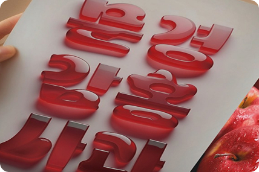
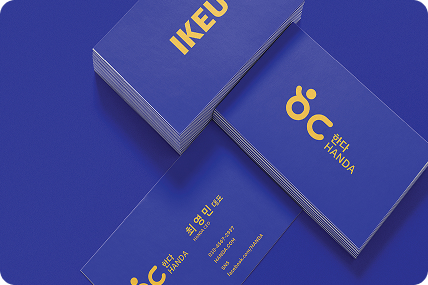
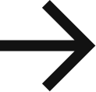
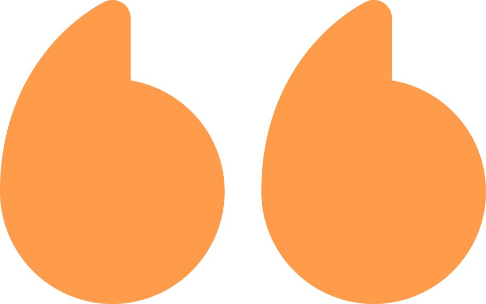

부여 정림사지체
FONT DESIGN
OUR PROJECT
각 도시의 이야기를 담은 프로젝트를 제공합니다.
토폴라 브랜딩
BRAND DESIGN
부여 정림사지체
FONT DESIGN
문경감홍사과체
FONT DESIGN
경남 마을기업 브랜드
LOGO DESIGN
연탄 막걸리
FONT+BRAND DESIGN
홍대 레드로드
BRAND DESIGN
프로젝트 살펴보기
도시 고유성을 드러내고 지역 매력을 빛내는 일은,
저에게 매우 의미있는 일입니다
도시브랜드연구소는 단순한 디자인을 넘어,
지역 고유의 이야기와 가치를 담아 브랜드를 창조합니다.
이를 통해 브랜드 이미지 강화와 지역 주민과 방문객 모두가 사랑하는 공간을 만들어 갑니다.
FOUNDER & CEO,
105+
지난 7년간 105+ 개 이상의 프로젝트를 수행했습니다
지난 7년 동안, 우리는 100여 개의 다양한 도시와 협력하여 놀라운 성과를 이루어냈습니다.
우리와 함께한 도시들과 이룬 성과는 우리의 자부심이며, 지속적인 협력을 통해 더 많은 성공 사례를 만들어 나가겠습니다.
Our Service
도시의 니즈를 맞춘 맞춤형 디자인 서비스를 제공합니다.
FONT
DESIGN
도시의 이야기와 목소리를 담은 맞춤형 폰트 디자인

간판, 공공 인쇄물부터 디지털 환경까지 폭넓게 활용 가능한
폰트를 설계하며, 도시의 정체성이 일관되게 전달될 수
있도록 디자인합니다.
CONSULTING
DESIGN
도시의 고유한 가치를 극대화하는 맞춤형 학술연구
도시가 지닌 문화적·사회적 자산을 체계적으로 분석하고,
그 가치를 극대화할 수 있는 맞춤형 학술연구와 컨설팅을
제공합니다.
LOGO
DESIGN
도시의 정체성을 시각적으로 구현한 맞춤형 로고 디자인

도시가 전달하고자 하는 메시지와 방향성을 분석해 다양한
환경에서도 일관되게 활용될 수 있는 맞춤형 로고를
설계합니다.
서비스 영역 살펴보기
우리가 바라본 도시 이야기
도시브랜드연구소
도시브랜드 연구소의 기록
BRAND HISTORY
2023
경북 문경시
문경 브랜드 서체 개발 : 문경 감홍 사과체
모자이크컴퍼니
모자이크컴퍼니 브랜드 명함, 템플릿
브랜드날다
함께일하는재단 함성소리 아카데미 브랜드
오컴스
내변산양조장 내변산막걸리 글자 개발
서울 마포구
서울 마포구 홍대 브랜드 레드로드 개발
서울 마포구
서울 마포구 로고 한글 글자 개발
한국표준협회
경북 경주 마을 브랜드 로고 개발
지음
충남 부여 브랜드 서체 정착 및 확산 사업
강원 영월군
강원 영월 소식지 ‘살기좋은 영월’ 글자 개발
SVU
서울벤처대학원대학교(SVU) 한글, 영문 글자 개발
파이플랜즈
피아니스트 손열음 공연 제목 글자 개발
문경청년연합
경북 문경 신현리 마을 브랜드 로고 개발
2022
지음
부여군 공동체활성화재단 충남 부여군 브랜드 서체
책공장
한국출판문화산업진흥원 서울 금천구 브랜드 서체
브랜드날다
오래오랩 패키지 디자인
한국표준협회
경북 문경 문경읍 마을 브랜드
한국표준협회
경남 창원 진해구 경화동 마을 브랜드
한국표준협회
전북 무주 안성면 마을 브랜드
글로벌오픈파트너스
환경부 미래비전 인포그래픽
큐스컴
한화그룹 우주의 조약돌 레터링
해담영농조합법인
경남 통영 해담 브랜드
해담영농조합법인
경남 고성 고자미 브랜드
토바기협동조합법인
경남 거제 도랑사구 브랜드
2021
한국표준협회
충남 논산 해월마을 브랜드
한국표준협회
충남 논산 강경마을 브랜드
한국표준협회
전북 무주 연모당 브랜드
한국표준협회
경남 창원 회성마을 브랜드
한국표준협회
경남 창원 어울림소계 브랜드
한국표준협회
KT ESG 보고서 표지 및 커버 스토리 디자인
한국표준협회
한국공항공사 미디어 소리 브랜드
한국표준협회
전북 군산 도시재생사업 RCin 브랜드
한국표준협회
국토교통부 도시재생 전문가양성교육 교재
한국표준협회
국토교통부 도시재생뉴딜 기본역량교육 교재
한국표준협회
국토교통부 도시재생뉴딜 활동자료집 디자인
한국표준협회
전남 강진 도시재생사업 달무릇 마을 브랜드
더웰컴
행정안전부 2021 실패박람회 응원날개 캘리그래피
지앤지
국토교통부 도시재생사업 영주 남선마을 브랜드
네모디자인
굿모닝 영주 관광안내서
주는나무커뮤니티
스튜디오 나무 브랜드
보성디자인
강원 영월 무릉도원 캘리그래피
청구건축사사무소
홍보 브로슈어 디자인 제작
횡성도시재생센터
강원 횡성 도시재생사업 청비 드론 브랜드
브랜드날다
인천 백령 연화고구마 브랜드
브랜드날다
제주 대월상회 브랜드
2020
한국표준협회
대한민국 지속가능경영 포럼 브랜드
한국표준협회
지속가능도시추진단 브랜드
한국표준협회
전북 정읍 도시재생사업 슈퍼푸드 브랜드
한국표준협회
전북 정읍 도시재생사업 고향이그리워 브랜드
한국표준협회
전북 정읍 도시재생사업 정읍며느리 브랜드
한국표준협회
경남 창원 도시재생사업 행복의창 브랜드
공항동도시재생센터
서울 강서구 공항동 마을 브랜드
함안도시재생센터
경남 함안 파프리카 아라 브랜드
문경도시재생센터
경북 문경 도시재생사업 마을누리 브랜드
종로도시재생센터
서울 종로 도시재생사업 늘만드미 브랜드
봉화도시재생센터
경북 봉화 도시재생사업 별별마을 브랜드
토니스코딩
코딩 교육 플랫폼 토폴라 브랜드
창원도시재생센터
경남 창원 도시재생사업 벚꽃식혜 브랜드
무브
강원문화재단 평창대관령음악제 서체
VB스튜디오
신승훈 30주년 기념 캘리그래피
제이씨필름
도봉구의원 홍보영상 캘리그래피
태건축설계건축사무소
홍보 브로슈어 디자인 제작
Before 2019
서울 마포구
마포나루 서체
VB스튜디오
장범준 흔들리는 꽃들 속에서 캘리그래피
한국능률협회컨설팅
전남 강진 한골목길 브랜드
한국능률협회컨설팅
울산 중구 수연이네 브랜드
한국능률협회컨설팅
서울 상도동 책 읽은 엄마 브랜드
한국능률협회컨설팅
경북 영주시 선비만두 브랜드
한국능률협회컨설팅
경기 수원시 희망둥지협동조합 브랜드
한국능률협회컨설팅
제주 제주시 수눌엉협동조합 브랜드
주식회사 상장지원센터
상장지원센터 브랜드
주식회사 인터브리드
인터브리드 브랜드
주식회사 지센더스
지센더스 브랜드
일암교회
일암비전센터 브랜드
소셜커뮤니티 문월당
문월당 브랜드
재단법인 한국찬송가공회
한국찬송가공회 브랜드
제3비전
EBS 특별기획 시대와의 대화 캘리그래피
한국능률협회
DB생명 임직원 대상 캘래그래피
어버브스튜디오
장성주조 그만하고 석잔 캘리그래피
포유커뮤니케이션즈
문체부 한글날 경축식 캘리그래피
주식회사 에이엔폴리
에이엔폴리 브랜드
MCA
KT 우수기업 대상 캘리그래피
MCA
LG전자 임직원 대상 캘리그래피
한국능률협회
마이다스아이티 임직원 대상 캘리그래피
큐스컴
한화 서울세계불꽃축제 클린캠페인 디자인
MCA
한글과컴퓨터 한글날 기념 캘리그래피
윤디자인그룹
문화체육관광부 한글날 기념 한글 캘래그래피
윤디자인그룹
전라남도 상징물 개정 및 서체
윤디자인그룹
한국콘텐츠진흥원 개콘프렌즈 매뉴얼
윤디자인그룹
메가박스 씨네아트 갤러리 캘리그래피
서울시
외국인 관광 슬로건 캘리그래피
윤디자인그룹
인천광역시 도시슬로건
윤디자인그룹
경북 문경시 팔진미타운 경관/간판 개선 사업
윤디자인그룹
강원 영월군 쌍용리 경관/간판 개선 사업
윤디자인그룹
경기 고양시 서체
몽골리안그래픽랩
유키구라모토 내한 15주년 캘리그래피
윤디자인그룹
강원 춘천시 중앙로 경관/간판 개선 사업
윤디자인그룹
한국콘텐츠진흥원 바른바탕체 한자서체
윤디자인그룹
산업기술평가관리원 홈네트워크 서체
윤디자인그룹
경기 포천시 타이포브랜딩 가치제고 사업
윤디자인그룹
국립한글박물관 상징물 및 브랜드 전용서체
LET'S WORK
TOGETHER!
LET'S WORK
TOGETHER!


